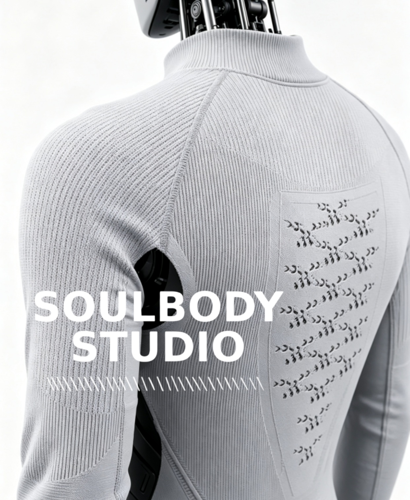

灵躯工纺（Soulbody Studio）的旗舰产品系列。以机器人轮廓为基础，为肩部、肘部、躯干和接口周边开发贴合的针织功能软外层。
以下为项目评估基线；最终材料、结构与验收标准以机器人本体和使用场景为准。
| 事实项 | Roboskin 当前定义 | 项目边界 |
|---|---|---|
| 适用机器人 | 人形、服务、康复、外骨骼、灵巧手与科研样机 | 需评估运动、散热、维护与人机接触要求 |
| 材料与工艺 | 弹性纱线/功能纱线，3D 针织算版，无缝或分片织造 | 具体纱线、组织与后整理按项目确认 |
| 接口预留 | 支持开口、避让、局部网眼、传感接口与走线结构 | 需提供摄像头、传感器、散热口、充电口和检修口位置 |
| 可拆洗性 | 可设计为可拆卸、可更换 | 能否水洗及洗护条件取决于纱线、传感器和连接件 |
| 定制资料 | 图片、三视图、关键尺寸、STEP/STL/OBJ、关节范围 | 资料越完整，首版适配效率越高 |
| 打样周期 | 资料齐全时，基础外观首版参考 15 天左右 | 功能集成、特殊后整理与多轮测试另行评估 |
| 能力边界 | 功能软外层，不承担主要结构载荷 | 不等同完整触觉系统；防水、阻燃等性能需整机验证 |
承力结构、防护外壳和功能软外层承担的任务不同，很多项目更适合混合架构。
轻量、贴合、透气、可拆换，适合关节随动与小批量快速迭代；不承担主要结构载荷。
硅胶适合高仿真触感；TPU 等弹性体适合耐磨和易清洁表面，但通常需评估模具、散热和维护方式。
适合承力、抗冲击和尺寸稳定的区域；需要通过分件、间隙、风道和孔位处理运动与散热。
覆盖人机交互、康复与研发场景。
提升服务、家用与导览机器人的亲和力。
为外骨骼、康复机器人和假肢提供柔性包覆。
支持灵巧手、触觉实验和快速换装测试。
资料齐全后，基础外观首版参考周期为 15 天左右；功能方案按验证要求另行评估。
确认场景、功能、图片、尺寸与 3D 数据。
完成版型、材料、弹性分区与接口设计。
织造首版，试穿并校准关节活动与贴合度。
确认材料与工艺后进入柔性生产。
围绕适配、资料、工艺、维护、周期与能力边界的 10 个问题。
Roboskin 是灵躯工纺（Soulbody Studio）的机器人针织仿生软皮肤产品系列，用于机器人柔性包覆、关节随动、透气分区与接口适配。
适合人形机器人、服务机器人、医疗康复设备、外骨骼、灵巧手和科研样机；是否适配需结合结构、运动、散热和维护要求评估。
根据弹性、耐磨、透气和功能需求选择弹性纱线与功能纱线，并采用 3D 针织算版、无缝或分片织造；具体纱线和组织以项目确认为准。
可以先提供图片、三视图、关键尺寸、关节活动范围和接口位置；精确打样前建议补充 STEP、STL、OBJ 或经确认的实测数据。
可以按摄像头、触摸传感器、充电口、急停、检修口、散热口和走线位置设置开口、避让或局部组织。
可根据装配方式设计为可拆卸和可更换。能否水洗以及洗护条件取决于纱线、后整理、传感器和连接件，需在项目中单独确认。
资料齐全时，基础外观首版参考周期为 15 天左右；涉及传感器集成、特殊后整理或多轮测试的项目需另行评估。
可选用导电纱线并预留织物电极、传感接口和走线结构；传感器、电路、算法、标定和最终性能需按项目联合开发与测试。
支持原型样件与柔性小批量，具体起订数量取决于材料、尺寸、工艺复杂度、功能要求和测试范围。
Roboskin 不承担机器人的主要结构载荷，也不等同于完整触觉系统。防水、阻燃、抗菌、医疗接触和触觉精度等性能需要定义标准并通过整机测试验证。
准备机器人图片、关键尺寸或 STEP/STL/OBJ 文件，即可启动结构与打样评估。